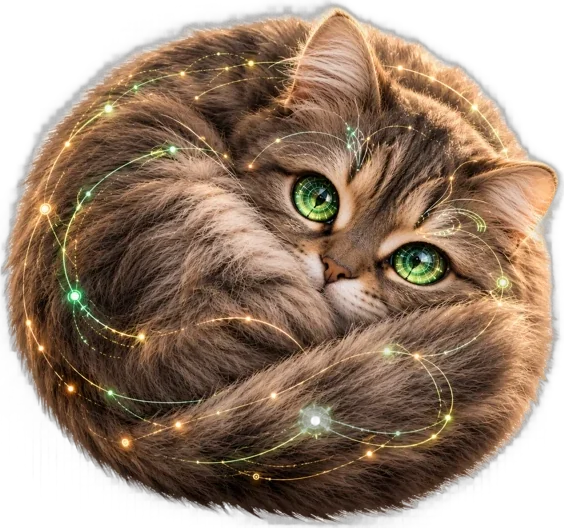

Мастерская и школа ручной работы
Дом, в котором живёт душа, собирается из вещей, сделанных руками
Я создаю авторские новогодние шары из бархата, кружева и жемчуга — и учу делать их самостоятельно. А ещё рассказываю, как цвет, свет и текстиль превращают обычную квартиру в дом, куда хочется возвращаться.
Что здесь есть
Три двери в одну мастерскую
Можно просто полюбоваться работами, можно научиться делать такие же, а можно начать с бесплатных уроков и понять, с чего начинается уют.
Мои работы
Коллекция новогодних шаров ручной работы: камея и кружево, изумрудный бархат, винтажная вышивка. У каждого шара своя история и состав.
Открыть коллекцию →Обучение
Курсы по созданию ёлочных игрушек, по дизайну уютного интерьера и по тому, как превратить хобби в небольшое дело.
Выбрать программу →Бесплатные уроки
Короткие практичные материалы: палитра ёлки, правило трёх текстур, тёплый свет, первый бархатный шар и уход за игрушками.
Читать уроки →Из коллекции
Шары, которые превращают ёлку в произведение искусства

Почему ручная работа
Разница между вещью, которая заполняет полку, и вещью, которая создаёт настроение
Уют редко получается из покупок «по акции». Он складывается из немногих вещей, у которых есть фактура, история и характер.
Серийный декор
- Пластик и глянец, которые выглядят одинаково в тысячах квартир
- Покупается «на сезон» и через год уходит в коробку или в мусор
- Цвета подобраны под витрину, а не под ваш интерьер
- Нет истории, которую захочется рассказать гостям
Вещь ручной работы
- Бархат, кружево, жемчуг и вышивка: фактура, которую хочется потрогать
- Становится семейной реликвией, которую достают каждый декабрь
- Цвет и отделку можно подобрать под конкретную ёлку и комнату
- А если сделать её своими руками, у дома появляется ваша собственная история
Три опоры уюта
Правила, с которых начинается любое пространство
Подробно разбираем их в бесплатных уроках и на курсе «Дизайн уютного дома».
Цвет
Один основной цвет, один поддерживающий и один акцент. Работает и для гостиной, и для ёлки.
Свет
Тёплая цветовая температура ламп и три уровня освещения вместо одной люстры под потолком.
Фактура
Гладкое, мягкое и рельефное в одной композиции: например, атлас, бархат и кружево на одном шаре.

О мастерской
Soul of Home — это про вещи, в которые вложено время и внимание
Всё началось с одного бархатного шара, сделанного к Новому году для своей ёлки. Сейчас это коллекция авторских игрушек, каждая из которых собирается вручную: обтяжка тканью, объёмная вышивка, жемчуг, кружево и стразы.
Параллельно выросла школа. В ней я делюсь техниками, которые отработала на своих изделиях, и тем, что узнала о дизайне пространства: как подобрать палитру, поставить свет и сочетать текстиль, чтобы дом ощущался своим.

Будем на связи
Новые работы, анонсы наборов и уроки выходят в Telegram-канале
Бот @SoulHomeRuBot: заказ шара под цвет вашей ёлки или интерьера, вопросы о курсах и анонсы новых уроков.